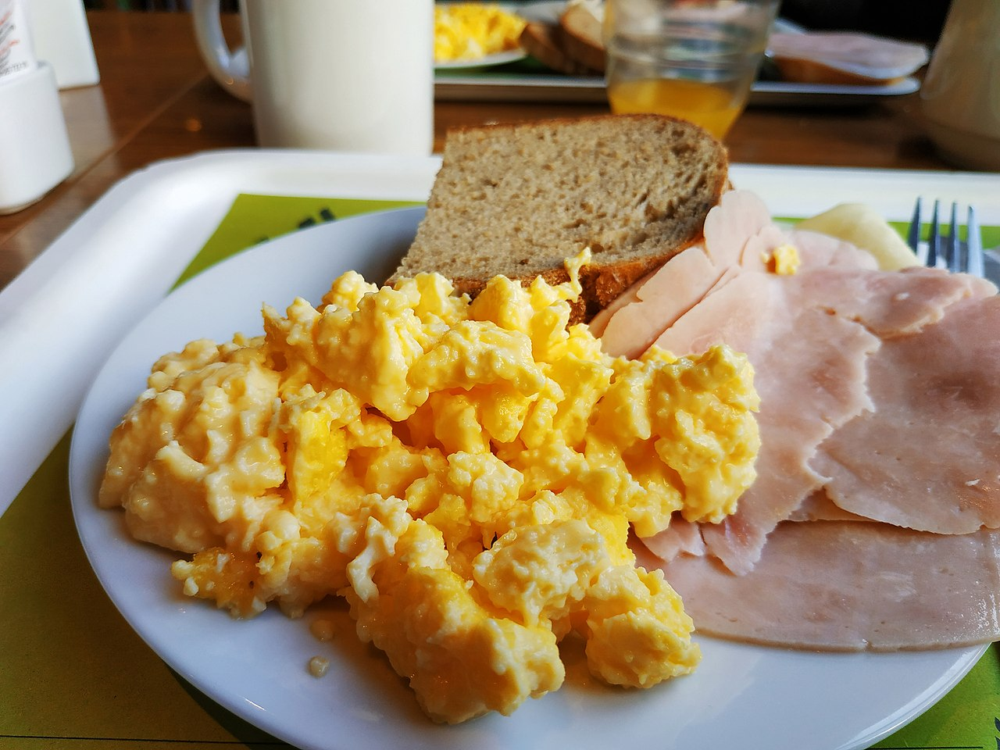

Home
Scrambled Egg

Description
Whisked egg cooked in a pan with oil or fat
Ingredients
- 1 Egg
- 1 tbsp Cold Milk or Cold Water
- Oil
- Seasonings to taste
Steps
- Mix egg/s, liquids, and seasonings in a bowl.
- Put oil in clean pan and turn stove to desired heat.
- Once pan is hot enough, put mixture on pan.
- Stir mixture around until your desired scrambled eggs texture.
- Turn off the stove and plate your scrambled eggs.
Notes
- If you want fluffier and eggier eggs, use water.
Using milk will make your eggs taste less eggy and fluffy, but will make it taste creamier.
- The heat of the pan depends on your preference.
Cooking Low and Slow will make it more runny.
Cooking Fast and Quick will make it more defined.
- You can use as much eggs as you want.
Add a tablespoon of water or milk for each egg added.
- You can use butter instead of oil for a richer flavor.